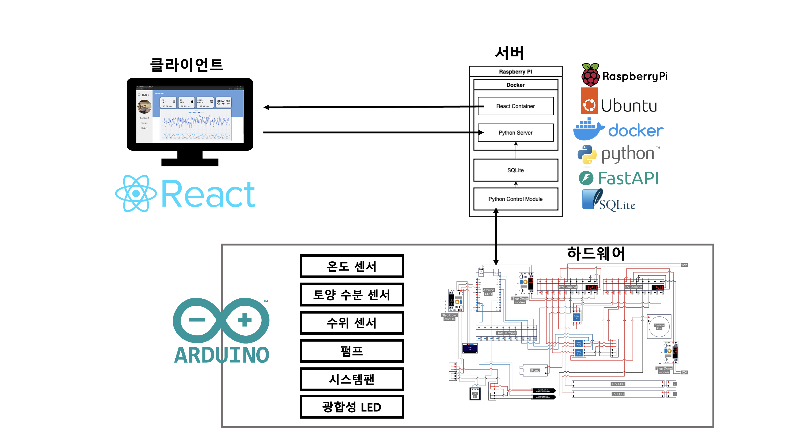
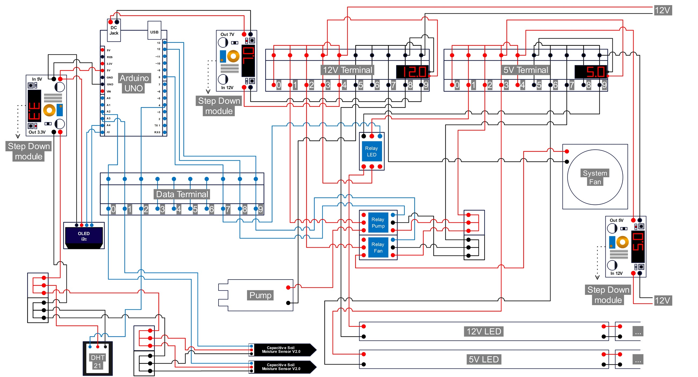
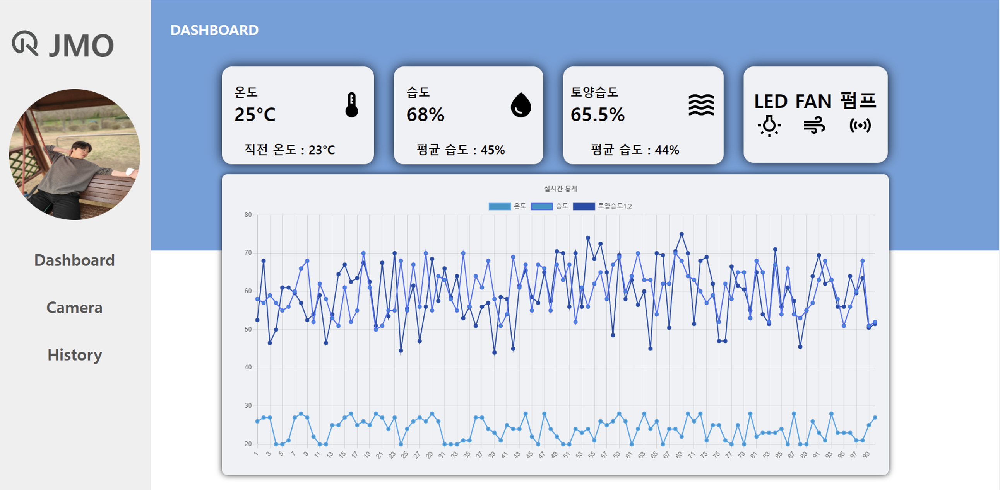
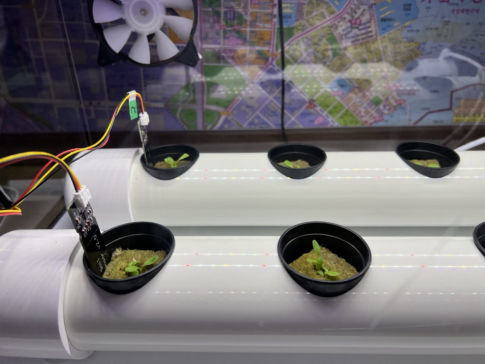
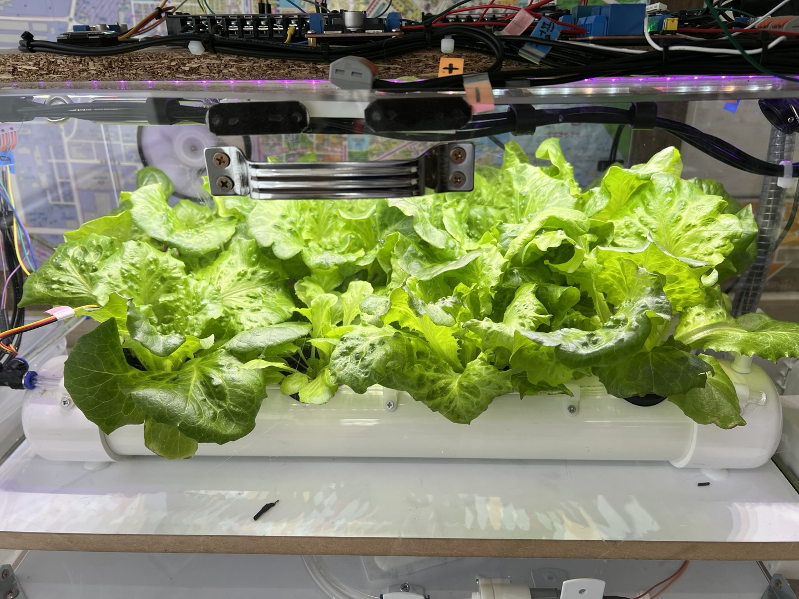

프로젝트 개요
JMO SmartFarm는 학교 캡스톤 과제로 수행했으며, 농작물 자동 관리 및 모니터링하여 그 데이터를 사용자에게 제공하는 시스템입니다.
👊 사용 기술
⚡ FastAPI
스마트팜의 온도, 습도 등 기록을 받아와 저장, 사용자에게 제공하는 메인 서버
🐬 MySQL
스마트팜 관리 기록을 저장하기 위한 DBMS
🐳 Docker
컨테이너 기반의 배포 및 관리를 위해 사용
⚛️ React
모니터링 기록을 사용자에게 보여주기 위한 프론트엔드 프레임워크
프로젝트 구성원
| 구성원 | 업무 |
|---|---|
| 김준건 (jgkim14) | 백엔드 |
| 서정훈 (CutTheWire) | 프로젝트 매니저,하드웨어, 백엔드 |
| 손유노 (GingGang) | 프론트엔드 |
| 오동현 (zbezdac1f) | 백엔드 |
시스템 설계

회로 설계

클라이언트 화면

스마트팜 결과 화면

